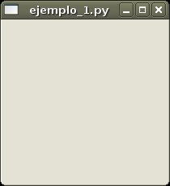
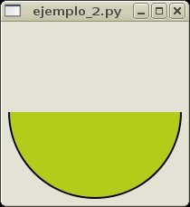
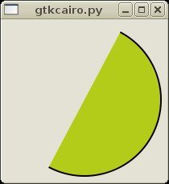

Éste tutorial está basado originalmente en ésta obra extraída de www.pygtk.org, no es una tradudcción literal, y extiende su contenido.
NOTA: Para poder ejecutar el código vamos a necesitar la versión 2.8 de pygtk y pycairo.
Lo primero que debemos hacer es importar las librerias que vamos a necesitar:
import gtk
import gtk.gdk
import math
Lo siguiente será; crear una nueva clase, que heredará de la clase gtk.DrawingArea (área de dibujado) que es el area que utilizaremos para capturar los eventos y dibujar en ella el resultado de las funciones que utilicemos en cairo, añadiremos también un constructor por defecto:
class SemiCirculo(gtk.DrawingArea):
def __init__(self):
gtk.DrawingArea.__init__(self)
A continuación añadiremos el prototipo de dos de los métodos que vamos a necesitar, uno de ellos se encargará de llevar a cabo las tareas de dibujado y el otro, será el manejador del evento expose, que es el evento que ocurre cuando se redibuja el widget, por ejemplo al moverlo o al pasar una ventana por encima:
class SemiCirculo(gtk.DrawingArea):
def __init__(self):
gtk.DrawingArea.__init__(self)
self.connect("expose-event", self.expose)
def expose(self, widget, event):
pass
def draw(self, context):
pass
Ahora ya podemos ejecutar nuestro programa, aunque no hará nada, lo que haremos es crear una función principal donde crearemos una ventana y una instancia de nuestra clase, dicha función será llamada sólo en caso de que se ejecute nuestro fuente como un script:
def main():
window = gtk.Window()
semicirculo = SemiCirculo()
# Añadimos nuestro widget a la ventana
window.add(semicirculo)
# Conectamos el evento destroy con la salida del bucle de eventos
window.connect("destroy", gtk.main_quit)
# Dibujamos toda la ventana
window.show_all()
# Comenzamos el bucle de eventos
gtk.main()
if __name__ == "__main__":
main()
El fichero fuente deberia éstar tal que asi: ejemplo_1.py
Lo ejecutamos, y obtenemos el siguiente resultado:
[arc@synaptia:~]$ python2.4 ejemplo_1.py

Como vemos, aun no hemos hecho nada interesante, a continuación vamos a dibujar el semicirculo, lo primero será crear la función draw:
def draw(self, context):
#Adquirimos las coordenadas de origen
#y el tamaño del rectangulo del widget,
#situando en las variable x e y
#el centro del rectangulo.
rect = self.get_allocation()
x = rect.x + rect.width / 2
y = rect.y + rect.height / 2
#hallamos el radio
radius = min(rect.width / 2, rect.height / 2) - 5
#Dibujamos un arco
context.arc(x, y, radius, 0,(1 * math.pi))
#Elegimos el color de relleno y lo vertemos
context.set_source_rgb(0.7, 0.8, 0.1)
context.fill_preserve()
#Elegimos el color del borde y lo dibujamos
context.set_source_rgb(0, 0, 0)
context.stroke()
Ahora debemos desarrollar el código del manejador del evento:
def expose(self, widget, event):
#Creamos un contexto de dibujo cairo
self.context = widget.window.cairo_create()
#Ajustamos el tamaño del contexto al del widget
self.context.rectangle(event.area.x, event.area.y,
event.area.width, event.area.height)
self.context.clip()
#Llamamos a la función de dibujado
self.draw(self.context)
return False
El ejemplo hasta ahora deberia quedar asi: ejemplo_2.py
Ahora ya tenemos un semicirculo que se redimensiona al mismo tiempo que la ventana:

DrawingArea, por defecto, no captura los eventos de pulsación y movimiento del ratón, asi que hay que añadirselos a mano en el constrcutor:
class EggClockFace(gtk.DrawingArea):
def __init__(self):
gtk.DrawingArea.__init__(self)
self.add_events(gtk.gdk.BUTTON_PRESS_MASK |
gtk.gdk.BUTTON1_MOTION_MASK)
Ahora debemos crear los manejadores de los dos nuevos eventos, como miembros de nuestra clase SemiCirculo:
def pressing(self, widget, event):
pass
def moving(self, widget, event):
pass
Ahora conectamos los eventos con los nuevos manejadores:
class SemiCirculo(gtk.DrawingArea):
def __init__(self):
gtk.DrawingArea.__init__(self)
self.add_events(gtk.gdk.BUTTON_PRESS_MASK |
gtk.gdk.BUTTON1_MOTION_MASK)
self.connect("expose_event", self.expose)
self.connect("button_press_event", self.pressing)
self.connect("motion_notify_event", self.moving)
Ahora queremos que el semicirculo, tras haber hecho click y sin soltar previamente, se mueva en la misma dirección en la medida que nos desplacemos en el eje X, para ello, el manejador debe guardar la coordenada de referencia, es decir, la posición del ratón cuando se produce el evento button-press (el click izquierdo):
def pressing(self, widget, event):
self.pressing_x = event.x
Y ahora el manejador de movimiento:
def moving(self, widget, event):
#Determinamos si nos movemos a la izquierda
#o hacia la derecha
if (self.pressing_x - event.x) > 1:
self.desp = self.desp + 0.1
else:
self.desp = self.desp - 0.1
self.pressing_x = event.x
#Volvemos a dibujar el contexto
self.draw(self.context)
#Redibujamos el widget
self.queue_draw()
Ya solo nos falta, determinar un desplazamiento por defecto en el constructor y sumar el desplazamiento en la función que dibuja el arco:
class SemiCirculo(gtk.DrawingArea):
def __init__(self):
gtk.DrawingArea.__init__(self)
self.add_events(gtk.gdk.BUTTON_PRESS_MASK |
gtk.gdk.BUTTON1_MOTION_MASK)
self.connect("expose_event", self.expose)
self.connect("button_press_event", self.pressing)
self.connect("motion_notify_event", self.moving)
#Desplazamiento
self.desp = 0
Y por último, modificamos la función que dibuja el arco:
context.arc(x, y, radius, 0 + self.desp ,
(1 * math.pi) + self.desp)
Finalmente el fichero nos quedará asi: ejemplo_3.py

Alberto Ruiz - Éste documento está registrado bajo una licencia Creative Commons